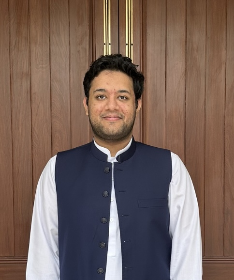

Hamza KhalidUniversity of Virginia
Hello! My name is Hamza, and I'm a second-year PhD student at UVA working on Security and Internet Measurements. My goal is to disentangle increasingly complex networks in order to make them easy to understand and adapt. I am advised by Hyojoon Kim Before UVA, I did my undergrad in Computer Science from Lahore University of Management Sciences (LUMS), Pakistan, where I worked on Security and Program Analysis with Fareed Zaffar, Hashim Sharif, and Mobin Javed |
 |
Email: xtg7bw@virginia.edu
Office: Rice Hall Room 532, Desk 4. 85 Engineer's Way, Charlottesville, VA 22903